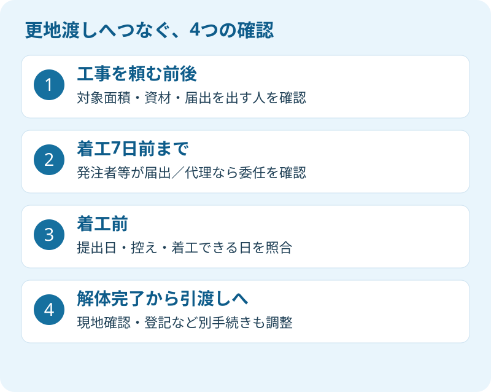

実家を壊して、更地で買主へ渡す。解体費の見積もりが出ると、次は工事日を決めたくなります。しかし、重機が空いている日と、手続きを終えて着工できる日は同じとは限りません。売買の引渡日を守るには、工期の前に届出の時間を置く必要があります。
大石浩之（磐田市／不動産業）です。宅地建物取引士として私は、解体の見積額だけで更地渡しの日程を約束しません。2026年9月20日に静岡県の手引きを確認しました。この記事は建設リサイクル法の届出義務者、委任、着工前の期限に絞って、売主が確認する順番を説明します。
80㎡は土地の広さではなく、解体する建物の床面積
静岡県の2026年4月版「建設リサイクル法届出の手引き」1頁では、特定建設資材を使った建築物の解体工事は、床面積の合計80㎡以上で対象建設工事となります。特定建設資材には、コンクリート、コンクリートと鉄から成る建設資材、木材、アスファルト・コンクリートが挙げられています。
正式な法律名は「建設工事に係る資材の再資源化等に関する法律」です。建設リサイクル法はその通称で、解体で出る資材を分けて取り扱い、再資源化につなげるための制度です。「古い木造住宅だから無関係」とはなりません。木材も対象の資材に入ります。
80㎡は敷地面積でも建物の一階部分だけの面積でもありません。たとえば説明用に、一階50㎡、二階40㎡の建物を全部解体すると考えると、合計は90㎡です。一階だけを見て80㎡未満と判断しないでください。正確な解体範囲と床面積は、図面と現地を照合して業者に確認します。
私は、面積の資料を売主も持つよう勧めます。登記の記載や古い図面だけでは、増築部分などの現況を判断しきれない場合があるためです。物置や離れを含む工事、建物の一部だけを壊す工事では、対象範囲の扱いを受付窓口へ確認します。80㎡に届くかどうかを、契約書を分けるなどの自己判断で処理してはいけません。
解体を発注する前の費用と売却条件は、実家の解体費用と売る順番で整理しています。この記事の80㎡は、費用相場を区切る数字ではなく、建築物解体の届出対象を確認するための規模基準です。
業者への委任と、発注者の確認を分ける
静岡県の手引きでは、届出をするのは対象建設工事の発注者、または自ら施工する人です。売主が解体を発注するなら、その売主が発注者として関係します。解体会社が工事を請け負ったというだけで、届出義務者まで自動的に解体会社へ変わるわけではありません。
静岡県の公式ページは、届出書とともに委任状の様式を公開しています。業者などへ提出手続きを委任する場合は、誰が誰に、どこまでの手続きを任せるかを確認します。届出者名、工事場所、対象建物、着工予定日を、売主も読んでから進めてください。
私は、業者へ手続きをまとめて頼めること自体は、売主の移動や書類作成の負担を減らす良い方法だと考えます。現場の内容を知る人が書類を整えれば、説明もつながります。ただし、売主への報告が「やっておきます」の一言だけで終わる形には注文があります。
私はこう考えます。業者に頼んだことと、届出が済んだことは別です。見積書に手続費用があるだけでは、いつ提出したかはわかりません。私は売主へ、提出日と、受付を確認できる控えを受け取るよう案内します。業者を疑うためではなく、買主へ説明する日程の根拠を持つためです。
| 売主が確認するもの | 確認する相手と内容 |
|---|---|
| 発注内容 | 解体業者へ、建物・附属物・残す物の範囲を確認 |
| 委任の範囲 | 提出担当へ、届出と修正対応をどこまで任せるか確認 |
| 提出日と控え | 提出担当から、受付を確認できる資料を受け取る |
| 着工日と引渡日 | 解体業者と仲介会社で、同じ工程表を共有する |
発注者が複数いる、所有者と発注者が違うなどの事情がある場合は、名前を適当に一人へ寄せず、契約と委任の関係を窓口や専門家へ確認します。家族内の連絡代表を決めることと、工事の契約や届出の名義を決めることは、分けて整理してください。
着工7日前を、更地渡しの日から逆算する
建設リサイクル法の対象工事は、静岡県の手引きに従い、工事着手の7日前までに届け出る必要があります。解体業者との契約日から7日という説明ではありません。対象となる工事の着工日と、届出の提出日を照合する期限です。
私は更地渡しの予定を、引渡し、現地確認、工事完了、着工、届出の順にさかのぼって組みます。期限ぎりぎりの提出を標準にすると、書類の不足や工事内容の変更に対応する余地がありません。法定の期限と、実務上確保したい余裕は分けて考えます。

工程表には「提出予定」だけでなく「提出済み」「修正確認中」を分けて記載します。私は、届出日を確認できない段階では、売主に確定した着工日として買主へ伝えないよう勧めます。工事会社の空き枠を逃したくない気持ちはありますが、予定を先に固めて後から書類を合わせる進め方は避けたい。ここは急ぎたい気持ちと慎重さで迷うところです。
2026年9月のような連休をまたぐ予定なら、窓口が書類を受け付ける日も別に確認します。「7日前」の日付をカレンダー上で引くだけでなく、その日に提出できるか、不備があった場合はどうなるかを、提出担当と受付窓口へ尋ねます。着工日の変更が出たときも、必要な手続きを自己判断せず確認してください。
届出を出したことは、解体に関するすべての調査や手続きが終わったという意味ではありません。石綿の事前調査と解体費用など、別の確認を同じ工程表に置きます。建設リサイクル法の届出だけを見て「明日から全部進められる」と判断しないことです。
磐田・袋井の窓口と、2026年様式の確認
静岡県の2026年4月現在の届出窓口一覧では、磐田市は建築住宅課の建築グループ、袋井市は建築住宅課の住宅土地対策室が掲載されています。県の手引きは、工事を行う区域を所管する市町を受付窓口としています。家族の住所ではなく、解体する実家の所在地で確認します。
県の公式ページは2026年5月29日更新です。2026年3月31日から、届出の氏名に旧姓を併記できると案内しています。掲載された2026年4月版手引きと、提出時の様式を確認してください。旧姓の併記は可能という案内で、全員に併記を求めるものではありません。
今回の更新情報と、80㎡以上・着工7日前という既存の基準は区別します。2026年に突然80㎡の義務が新設された、という話ではありません。手元に古い届出書が残っている売主には、日付だけ書き直さず、県の掲載様式と受付窓口を確かめるよう私は案内します。
県は、届出の宛名についても工事の規模などに応じた確認を案内しています。書類の宛名と、持って行く受付窓口を混同しないでください。業者へ委任するなら、提出先を任せるだけでなく、どこへ出したかを控えで共有してもらうと、後の照会もしやすくなります。
今日の一歩は、業者に提出日と控えを聞く
更地渡しを予定する売主が今日できる確認は、「届出の対象か、誰がいつ提出し、控えをいつ受け取れるか」の問い合わせです。解体費用を払い込む段取りとは別に、手続きの進行を記録してください。連絡は解体業者と仲介会社の双方へ同じ内容で共有します。
- 対象建物の床面積合計と、解体する範囲を確認する。
- 委任する手続き、提出日、控えの受取り方法を決める。
- 着工日・完了日・現地確認日・引渡日を一本の工程表にする。
解体が完了した後も、建物滅失登記の手続きと費用は別に確認します。土地家屋調査士への相談を含め、必要な書類と時期を整理してください。買主との契約で約束した更地の状態も、現場で確かめます。登記の個別判断は専門家に確認を。
富士ヶ丘サービスは、介護と不動産を一体で相談できる窓口として、磐田市・袋井市を中心に実家の整理を支援しています。家族が困らない売却のために、私は解体を急がせるのではなく、費用・届出・買主への約束が同じ工程表でつながるよう案内します。